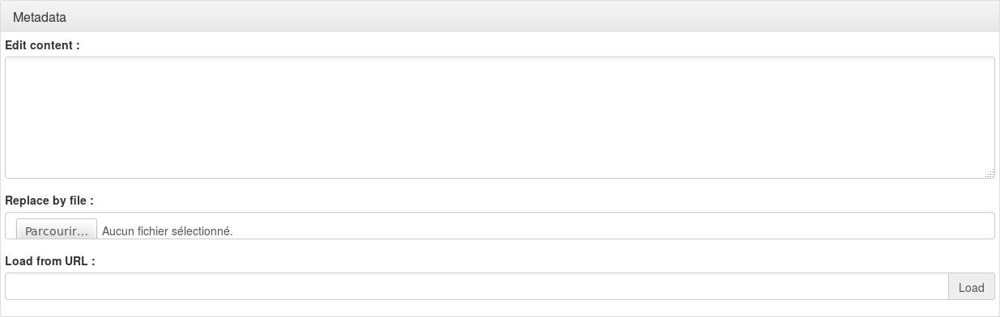

Table of Contents
SAML Identity Provider
Presentation
LL::NG can act as an SAML 2.0 Identity Provider, that can allow one to federate LL::NG with:
- Another LL::NG system configured with SAML authentication
- Any SAML Service Provider
Configuration
SAML Service
See SAML service configuration chapter.
IssuerDB
Go in General Parameters » Issuer modules » SAML and configure:
- Activation: set to
On. - Path: keep
^/saml/unless you have change SAML end points suffix in SAML service configuration. - Use rule: a rule to allow user to use this module, set to
1to always allow.
$authenticationLevel > 2
Register LemonLDAP::NG on partner Service Provider
After configuring SAML Service, you can export metadata to your partner Service Provider.
They are available at the Metadata URL, by default: http://auth.example.com/saml/metadata.
You can also use http://auth.example.com/saml/metadata/idp to have only IDP related metadata.
In both cases, the entityID of the LemonLDAP::NG server is http://auth.example.com/saml/metadata
Register partner Service Provider on LemonLDAP::NG
In the Manager, select node SAML service providers and click on Add SAML SP.
The SP name is asked, enter it and click OK.
Now you have access to the SP parameters list.
Metadata
You must register SP metadata here. You can do it either by uploading the file, or get it from SP metadata URL (this require a network link between your server and the SP).

Exported attributes

For each attribute, you can set:
- Key name: name of the key in LemonLDAP::NG session
- Name: SAML attribute name.
- Friendly Name: optional, SAML attribute friendly name.
- Mandatory: if set to "On", then this attribute is required to build the SAML response, an error will displayed if there is no value for it. Optional attribute will be sent only if there is a value associated. Else it just will be sent trough an attribute response, if explicitly requested in an attribute request.
- Format: optional, SAML attribute format.
Options
Authentication response
- Default NameID format: if no NameID format is requested, or the NameID format undefined, this NameID format will be used. If no value, the default NameID format is Email.
- Force NameID session key: if empty, the NameID mapping defined in SAML service configuration will be used. You can force here another session key that will be used as NameID content.
- One Time Use: set the OneTimeUse flag in authentication response (
<Condtions>). - sessionNotOnOrAfter duration: Time in seconds, added to authentication time, to define sessionNotOnOrAfter value in SAML response (
<AuthnStatement>):
<saml:AuthnStatement AuthnInstant="2014-07-21T11:47:08Z" SessionIndex="loVvqZX+Vja2dtgt/N+AymTmckGyITyVt+UJ6vUFSFkE78S8zg+aomXX7oZ9qX1UxOEHf6Q4DUstewSJh1uK1Q==" SessionNotOnOrAfter="2014-07-21T15:47:08Z">
- notOnOrAfter duration: Time in seconds, added to authentication time, to define notOnOrAfter value in SAML response (
<Condtions>and<SubjectConfirmationData>):
<saml:SubjectConfirmationData NotOnOrAfter="2014-07-21T12:47:08Z" Recipient="http://simplesamlphp.example.com/simplesamlphp/module.php/saml/sp/saml2-acs.php/default-sp" InResponseTo="_3cfa896ab05730ac81f413e1e13cc42aa529eceea1"/>
<saml:Conditions NotBefore="2014-07-21T11:46:08Z" NotOnOrAfter="2014-07-21T12:48:08Z">
<Conditions>
- Force UTF-8: Activate to force UTF-8 decoding of values in SAML attributes. If set to 0, the value from the session is directly copied into SAML attribute.
Signature
These options override service signature options (see SAML service configuration).
- Sign SSO message: sign SSO message
- Check SSO message signature: check SSO message signature
- Sign SLO message: sign SLO message
- Check SLO message signature: check SLO message signature
Security
- Encryption mode: set the encryption mode for this IDP (None, NameID or Assertion).
- Enable use of IDP initiated URL: set to
Onto enable IDP Initiated URL on this SP.
- IDPInitiated: 1
- One of:
- sp: SP entity ID
- spConfKey: SP configuration key
For example: http://auth.example.com/saml/singleSignOn?IDPInitiated=1&spConfKey=simplesamlphp
Macros
You can define here macros that will be only evaluated for this service, and not registered in the session of the user.
Known issues
Using both Issuer::SAML and Auth::SAML on the same LLNG may have some side-effects on single-logout.